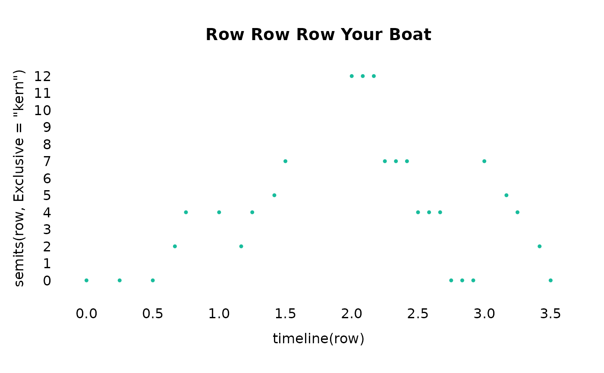

Time, rhythm, and meter in humdrumR
Nathaniel Condit-Schultz
2023-02-24
Source:vignettes/RhythmAndMeter.Rmd
RhythmAndMeter.RmdAs a computational musicology toolkit, humdrum\(_{\mathbb{R}}\)’s tools for analyzing and manipulating pitch data are just about the most important tools in the toolbox. For the most part, humdrum\(_{\mathbb{R}}\)’s pitch tools are focused on the Western notions of rhythm and meter, but the tools can easily be generalized to more diverse notions of rhythm and time.
Durations
The fundamental unit of rhythm is a “duration”—a span of time.
Humdrum\(_{\mathbb{R}}\) defines a
suite of rhythm functions, notably recip() and
duration(). These functions all work in essentially the
same way: they take in an input argument and output rhythm (duration)
information in their own particular format. For example,
input <- c('4.c', '8d', '4e', '2.g')
duration(input)
> **duration
> [1] 0.375 0.125 0.250 0.750
recip(input)
> **recip
> [1] 4. 8 4 2.
notehead(input)
> **notehead
> [1] 𝅘𝅥 𝅭 𝅘𝅥𝅮 𝅘𝅥 𝅗𝅥 𝅭
quarters(input)
> **quarters
> [1] 1.5 0.5 1.0 3.0Notice that the functions all recognize the rhythm part of these
input tokens, ignoring the non-rhythm (pitch) information. If you want
to keep the non-rhythm part of your tokens, use the inPlace
argument:
input <- c('4.c', '8d', '4e', '2.g')
duration(input, inPlace = TRUE)
> [1] "0.375c" "0.125d" "0.25e" "0.75g"
recip(input, inPlace = TRUE)
> [1] "4.c" "8d" "4e" "2.g"
notehead(input, inPlace = TRUE)
> [1] "𝅘𝅥 𝅭 c" "𝅘𝅥𝅮 d" "𝅘𝅥 e" "𝅗𝅥 𝅭 g"
quarters(input, inPlace = TRUE)
> [1] "1.5c" "0.5d" "1e" "3g"The cool thing is that each of these functions can read any of the other function’s output. So you can do things like:
recip(0.375)
> **recip
> [1] 4.
quarters('4.')
> **quarters
> [1] 1.5
quarters(0.375)
> **quarters
> [1] 1.5
#
#
recip("𝅘𝅥 𝅭 ")
> **recip
> [1] 4.The complete list of basic pitch functions is:
-
Metric duration representations
-
Symbolic duration representations
-
recip(reciprocal note values) -
notehead(traditional note-value symbols)
-
-
Numeric duration representations
-
duration(Whole notes) -
quarters(quarter notes/crotchets)
-
-
Symbolic duration representations
-
Ametric duration representations
-
Symbolic duration representations
-
dur(durations of time)
-
-
Numeric duration representations
seconds-
ms(milliseconds)
-
Symbolic duration representations
Documentation
The global documentation for all the rhythm functions can be
seen by calling ?rhythmFunctions. You can also call
documentation for any individual function, like ?recip.
Rhythm Arguments
The rhythm functions from the previous section have a few shared
arguments that they all understand: scale and
parse(unit).
Scale and Unit
The scale and parse(unit) arguments are
conceptually different, but can be used to acheive very similar
transformations, so it can be easy to confuse them. The
scale argument is the easiest to understand: it simply
(re)scales the output duration of the function. Would you like to augment
durations? Perhaps doubling their length? Simply specify
scale = 2.
Or maybe you’d like diminish the durations, by cutting them in thirds?
The unit argument can be passed to the rhythm input
parser by adding and argument parse(unit = ...) to a call.
Rather than transforming the output, this argument controls how the
parser interprets the input unit. This is most useful with numeric
values. I might get a bunch of duration values as numbers, like
c(1, 1.5, 2, 1, 0.5, 1). But what unit is these numbers
counting? By default, humdrum\(_{\mathbb{R}}\) treats them as whole
notes, so 0.5 is a half note, right? However, we might
prefer to think of these numbers as units of quarter notes—a very common
approach. Let’s look at how our output would change:
input <- c(1, 1.5, 2, 1, 0.5, 1)
recip(input)
> **recip
> [1] 1 1. 0 1 2 1
recip(input, parse(unit = '4'))
> **recip
> [1] 4 4. 2 4 8 4As you can see, you could achieve the same difference in output using
the scale argument (scale = 1/4), but the
unit argument is a little bit of a different way of
thinking about it.
Special Cases
IOI
In **kern data, some durations correspond to
rests in the music, rather than notes, indicated by an
"r". In many analyses, we want to ignore rests and just
consider the durations (timespans) between notes, ignoring the presence
of rests. These are called inter-onset-intervals, or IOIs. The
ioi() function can be used to convert duration data that
includes rests, into IOIs. For example:
melody <- c('8g','8f#', '8g', '8r', '8g', '8f#','8e','8d', '4d#', '8r', '8f#', '4b', '4r')
ioi(melody)
> Warning: Passing an environment as data mask is deprecated.
> Please use `new_data_mask()` to transform your environment to a mask.
>
> env <- env(foo = "bar")
>
> # Bad:
> as_data_mask(env)
> eval_tidy(expr, env)
>
> # Good:
> mask <- new_data_mask(env)
> eval_tidy(expr, mask)
>
[90mThis warning is displayed once per session.
[39m
> [1] "8g" "8f#" "4g" "." "8g" "8f#" "8e" "8d" "4.d#" "."
> [11] "8f#" NA "."What did this do?
- The duration of each rest is append to the duration of the previous non-rest (if any).
- The first
8gbecomes a4g - The
4d#becomes4.d#.
- Rests are replaced by null tokens (
"."). - The last note even is
NA, because there is no more onsets after it to create a inter-onset-interval.
The last step here makes conceptual sense, but may not be what you
want! Maybe you’d like the interval between the last onset and the
end of the data? For that, specify
finalOnset = TRUE:
ioi(melody, finalOnset = TRUE)
> [1] "8g" "8f#" "4g" "." "8g" "8f#" "8e" "8d" "4.d#" "."
> [11] "8f#" "2b" "."When used in a call to with() or within(),
ioi() will automatically be applied within
Files/Spines/Paths.
Ties
A similar case to inter-onset-intervals are ties. In
**kern, the [, _, and
] tokens are used to indicate groups of durations that are
actually played as a single, longer duration. The untie()
function will automatically sum the durations of tied notes:
melody <- c('[2d', '8d]', '8d', '8f#', '8g#', '4.a', '[8b-', '2b-_', '4b-]', '4a', '2g#')
untie(melody)
> [1] "8%5d" "." "8d" "8f#" "8g#" "4.a" "2..b-" "." "."
> [10] "4a" "2g#"The tie tokens are removed, and tied-notes are replaced by null
tokens (".").
Timeline
Traditional musical scores, and most humdrum data, encode rhythmic
information as duration, like what we worked on in the previous section.
However, we often want to think about when musical events are happening,
relative to a fixed reference: usually, relative to the beginning of the
piece. We can compute a timeline from sequences of duration
values, using the timeline() function.
Let’s say we have a melody like:
row <- c('4c', '4c', '6c', '12d', '4e', '6e','12d', '6e', '12f', '2g',
'12cc', '12cc', '12cc', '12g', '12g', '12g', '12e', '12e', '12e', '12c', '12c', '12c',
'6g','12f', '6e', '12d','2c')Let’s look at a timeline for that melody:
timeline(row)
> [1] 0.0000000 0.2500000 0.5000000 0.6666667 0.7500000 1.0000000 1.1666667
> [8] 1.2500000 1.4166667 1.5000000 2.0000000 2.0833333 2.1666667 2.2500000
> [15] 2.3333333 2.4166667 2.5000000 2.5833333 2.6666667 2.7500000 2.8333333
> [22] 2.9166667 3.0000000 3.1666667 3.2500000 3.4166667 3.5000000The first note (4c) occurs at zero (the beginning) of
the timeline; the last note (2c) lands 3.5
whole-notes later; etc. If we combine this with a call to
semits() (check out the [Pitch and
Tonality][PitchAndTonality.html] guide) we can even make a plot of the
melody:

The timeline() function has extra special functionality
when working on actual humdrum datasets using with() or
within(). It will automatically (unless told not too)
calculate timelines separately within each File/Spine/Path of a dataset,
ignoring multiple stops. For example:
chorales <- readHumdrum(humdrumRroot, 'HumdrumData/BachChorales/chor.*.krn')
within(chorales, timeline(Token))
> ############################# vvv chor001.krn vvv #############################
> 1: !!!COM: Bach, Johann Sebastian
> 2: !!!CDT: 1685/02/21/-1750/07/28/
> 3: !!!OTL@@DE: Aus meines Herzens Grunde
> 4: !!!OTL@EN: From the Depths of My Heart
> 5: !!!SCT: BWV 269
> 6: !!!PC#: 1
> 7: !!!AGN: chorale
> 8: **kern **kern **kern **kern
> 9: *ICvox *ICvox *ICvox *ICvox
> 10: *Ibass *Itenor *Ialto *Isoprn
> 11: *I"Bass *I"Tenor *I"Alto *I"Soprano
> 12: *>[A,A,B] *>[A,A,B] *>[A,A,B] *>[A,A,B]
> 13: *>norep[A,B] *>norep[A,B] *>norep[A,B] *>norep[A,B]
> 14: *>A *>A *>A *>A
> 15: *clefF4 *clefGv2 *clefG2 *clefG2
> 16: *k[f#] *k[f#] *k[f#] *k[f#]
> 17: *G: *G: *G: *G:
> 18: *M3/4 *M3/4 *M3/4 *M3/4
> 19: *MM100 *MM100 *MM100 *MM100
> 20: 0 0 0 0
> 21: =1 =1 =1 =1
> 22: 0.25 0.25 0.25 0.25
> 23: 0.5 0.5 0.5 .
> 24: . 0.625 . .
> 25: 0.75 0.75 0.75 0.75
> 26: =2 =2 =2 =2
> 27: 1 1 1 1
> 28: 1.25 1.25 . .
> 29: . . . 1.375
> 30: 1.5 1.5 1.5 1.5
> 31: =3 =3 =3 =3
> 32: 1.75 1.75 1.75 1.75
> 33: . 1.875 1.875 .
> 34: 2 2 2 .
> 35: 2.125 . 2.125 2.125
> 36: 2.25 2.25 2.25 2.25
> 37: =4 =4 =4 =4
> 38: 2.5 2.5 2.5 2.5
> 39: 3 3 3 3
> 40: =5 =5 =5 =5
> 41-133:::::::::::::::::::::::::::::::::::::::::::::::::::::::::::::::::::::::::
> ############################# ^^^ chor001.krn ^^^ #############################
>
> (8 more files...)
>
> ############################# vvv chor010.krn vvv #############################
> 1-60:::::::::::::::::::::::::::::::::::::::::::::::::::::::::::::::::::::::::
> 61: 7 7 7 7
> 62: 7.5 7.5 7.5 7.5
> 63: =9 =9 =9 =9
> 64: 8 8 8 8
> 65: 8.25 8.25 8.25 8.25
> 66: 8.375 . . .
> 67: 8.5 8.5 8.5 8.5
> 68: . . 8.625 .
> 69: 8.75 8.75 8.75 8.75
> 70: =10 =10 =10 =10
> 71: 9 9 9 9
> 72: . 9.125 . .
> 73: 9.25 . 9.25 9.25
> 74: . 9.375 . .
> 75: 9.5 9.5 9.5 9.5
> 76: =11 =11 =11 =11
> 77: 10 10 10 10
> 78: 10.5 10.5 10.5 10.5
> 79: 10.75 10.75 10.75 10.75
> 80: . . 10.875 .
> 81: =12 =12 =12 =12
> 82: 11 11 11 11
> 83: 11.25 11.25 11.25 11.25
> 84: 11.5 11.5 11.5 11.5
> 85: 11.75 11.75 . 11.75
> 86: =13 =13 =13 =13
> 87: 12 12 12 12
> 88: 12.25 12.25 12.25 .
> 89: 12.5 12.5 12.5 .
> 90: == == == ==
> 91: *- *- *- *-
> 92: !!!hum2abc: -Q ''
> 93: !!!title: @{PC#}. @{OTL@@DE}
> 94: !!!YOR1: 371 vierstimmige Choralgesänge von Johann Sebastian B***
> 95: !!!YOR2: 4th ed. by Alfred Dörffel (Leipzig: Breitkopf und H&a***
> 96: !!!YOR2: c.1875). 178 pp. Plate "V.A.10". reprint: J.S. Bach, 371 ***
> 97: !!!YOR4: Chorales (New York: Associated Music Publishers, Inc., c.1***
> 98: !!!SMS: B&H, 4th ed, Alfred Dörffel, c.1875, plate V.A.10
> 99: !!!EED: Craig Stuart Sapp
> 100: !!!EEV: 2009/05/22
> ############################# ^^^ chor010.krn ^^^ #############################
> (***four global comments truncated due to screen size***)
>
> humdrumR corpus of ten files.
> Data fields:
> Token :: character
> *Result1 :: numericControlling the Start
You’ll notice that our timelines all start with zero, which makes
sense of course. But in some cases, you might want to have the timeline
start at a different value. For example, “Row Row Row Your Boat” is a
round, so we’d want the second entrance of the round to start at the
second measure. We can do this with the start argument to
timeline:
timeline(row, start = 2)
> [1] 2.000000 2.250000 2.500000 2.666667 2.750000 3.000000 3.166667 3.250000
> [9] 3.416667 3.500000 4.000000 4.083333 4.166667 4.250000 4.333333 4.416667
> [17] 4.500000 4.583333 4.666667 4.750000 4.833333 4.916667 5.000000 5.166667
> [25] 5.250000 5.416667 5.500000Pickups
The pickup argument gives us another option to control
where our timeline starts. In many datasets, the first few events in the
music are a anacrusis or “pick up”; we’d generally like our
timeline to start after the pickup. To make this happen, the
pickup argument can be passed a logical vector
which is the same length as the input (x): Any
TRUE values at the beginning of the vector are considered a
pickup; Thus, the first FALSE value in the
pickup vector is chosen as the start of th timeline. For
example, let’s say we have the melody
melody <- c('8c', '8d','2e', '2f','1e')but the first two notes are a pickup. Since we can see that the
pickup has a duration of .25 (quarte-note), we
could use the start argument to do this:
Now 0 is on the downbeat, and events before that
start are negative on the timeline!
To do this with the logical pickup
argument, we could do this:
This might seem less intuitive! However, this approach can
be very useful when working with actual humdrumR datasets. In many
humdrum datasets, pickup measures are indicated by have barlines labeled
=0 or =-. When humdrum\(_{\mathbb{R}}\) reads a file, it counts the
barlines and creates a field called Bar, and it numbers
pickup measures as zero (or negative numbers, if there are more than
one). This means pickups will have Bar < 1. So, in our
Bach chorales:
within(chorales, timeline(Token, pickup = Bar < 1))
> ############################# vvv chor001.krn vvv #############################
> 1: !!!COM: Bach, Johann Sebastian
> 2: !!!CDT: 1685/02/21/-1750/07/28/
> 3: !!!OTL@@DE: Aus meines Herzens Grunde
> 4: !!!OTL@EN: From the Depths of My Heart
> 5: !!!SCT: BWV 269
> 6: !!!PC#: 1
> 7: !!!AGN: chorale
> 8: **kern **kern **kern **kern
> 9: *ICvox *ICvox *ICvox *ICvox
> 10: *Ibass *Itenor *Ialto *Isoprn
> 11: *I"Bass *I"Tenor *I"Alto *I"Soprano
> 12: *>[A,A,B] *>[A,A,B] *>[A,A,B] *>[A,A,B]
> 13: *>norep[A,B] *>norep[A,B] *>norep[A,B] *>norep[A,B]
> 14: *>A *>A *>A *>A
> 15: *clefF4 *clefGv2 *clefG2 *clefG2
> 16: *k[f#] *k[f#] *k[f#] *k[f#]
> 17: *G: *G: *G: *G:
> 18: *M3/4 *M3/4 *M3/4 *M3/4
> 19: *MM100 *MM100 *MM100 *MM100
> 20: -0.25 -0.25 -0.25 -0.25
> 21: =1 =1 =1 =1
> 22: 0 0 0 0
> 23: 0.25 0.25 0.25 .
> 24: . 0.375 . .
> 25: 0.5 0.5 0.5 0.5
> 26: =2 =2 =2 =2
> 27: 0.75 0.75 0.75 0.75
> 28: 1 1 . .
> 29: . . . 1.125
> 30: 1.25 1.25 1.25 1.25
> 31: =3 =3 =3 =3
> 32: 1.5 1.5 1.5 1.5
> 33: . 1.625 1.625 .
> 34: 1.75 1.75 1.75 .
> 35: 1.875 . 1.875 1.875
> 36: 2 2 2 2
> 37: =4 =4 =4 =4
> 38: 2.25 2.25 2.25 2.25
> 39: 2.75 2.75 2.75 2.75
> 40: =5 =5 =5 =5
> 41-133:::::::::::::::::::::::::::::::::::::::::::::::::::::::::::::::::::::::::
> ############################# ^^^ chor001.krn ^^^ #############################
>
> (8 more files...)
>
> ############################# vvv chor010.krn vvv #############################
> 1-60:::::::::::::::::::::::::::::::::::::::::::::::::::::::::::::::::::::::::
> 61: 7 7 7 7
> 62: 7.5 7.5 7.5 7.5
> 63: =9 =9 =9 =9
> 64: 8 8 8 8
> 65: 8.25 8.25 8.25 8.25
> 66: 8.375 . . .
> 67: 8.5 8.5 8.5 8.5
> 68: . . 8.625 .
> 69: 8.75 8.75 8.75 8.75
> 70: =10 =10 =10 =10
> 71: 9 9 9 9
> 72: . 9.125 . .
> 73: 9.25 . 9.25 9.25
> 74: . 9.375 . .
> 75: 9.5 9.5 9.5 9.5
> 76: =11 =11 =11 =11
> 77: 10 10 10 10
> 78: 10.5 10.5 10.5 10.5
> 79: 10.75 10.75 10.75 10.75
> 80: . . 10.875 .
> 81: =12 =12 =12 =12
> 82: 11 11 11 11
> 83: 11.25 11.25 11.25 11.25
> 84: 11.5 11.5 11.5 11.5
> 85: 11.75 11.75 . 11.75
> 86: =13 =13 =13 =13
> 87: 12 12 12 12
> 88: 12.25 12.25 12.25 .
> 89: 12.5 12.5 12.5 .
> 90: == == == ==
> 91: *- *- *- *-
> 92: !!!hum2abc: -Q ''
> 93: !!!title: @{PC#}. @{OTL@@DE}
> 94: !!!YOR1: 371 vierstimmige Choralgesänge von Johann Sebastian B***
> 95: !!!YOR2: 4th ed. by Alfred Dörffel (Leipzig: Breitkopf und H&a***
> 96: !!!YOR2: c.1875). 178 pp. Plate "V.A.10". reprint: J.S. Bach, 371 ***
> 97: !!!YOR4: Chorales (New York: Associated Music Publishers, Inc., c.1***
> 98: !!!SMS: B&H, 4th ed, Alfred Dörffel, c.1875, plate V.A.10
> 99: !!!EED: Craig Stuart Sapp
> 100: !!!EEV: 2009/05/22
> ############################# ^^^ chor010.krn ^^^ #############################
> (***four global comments truncated due to screen size***)
>
> humdrumR corpus of ten files.
> Data fields:
> Token :: character
> *Result1 :: numericNow the 0 in our timelines corresponds to the first
downbeat of each spine, in each file. The key advantage is that this
will work even if different pieces in the corpus have pickups of
different lengths, even if there is no pickup.
Timestamp
The timestamp() function is a special variant of
timeline() which outputs a timeline in clock-time, using
the dur() format. In order to do this
timestamp() needs to know a tempo: by default,
with() and within() will pass the
BPM field from humdrum data (if there is one) to
timestamp(). If the BPM argument is not
provided, the default is 60 bpm.
Counting Beats
Ok, the timeline() gives us a timeline in whole-note
units, giving fractional (decimal) output. Often in music, we want to
know how many beats have ellapsed at a given time, rather than
the exact time position. For this, use the count(), and its
beat argument. The default beat is a
whole-note, so count() will count which whole note you are
on:
Let’s try quarter-notes instead:
count(row, beat = '4')
> [1] 1 2 3 3 4 5 5 6 6 7 9 9 9 10 10 10 11 11 11 12 12 12 13 13 14
> [26] 14 15count() will even work for irregular beat patterns,
which must be entered as a list. For example, the meter 7/8 is often
played as three beats, with the last beat being longer than the first
two: a pattern line 4 4 4.. count() can count
these irregular beats!
seven8 <- c('4', '4', '8','8','8','4','4','4','8','4','4','8','8', '8', '4')
count(seven8, beat = list(c('4', '4', '4.')))
> [1] 1 2 3 3 3 4 5 6 6 7 8 9 9 9 10This could be handy for counting subdivisions in swing time!
Subposition
The counterpart to count() is subpos().
When we count beats, some notes don’t actually land on the
beat, but somewhere “inside” the beat—in other words, between beats.
subpos() will tell us how far from the beat each attack is;
the unit will be whole-notes, unless we pass a scale
argument to change the scale. Let’s look at our last few examples again,
but using subpos():
subpos(row, scale = 12)
> **duration
> [1] 0 3 6 8 9 0 2 3 5 6 0 1 2 3 4 5 6 7 8 9 10 11 0 2 3
> [26] 5 6
subpos(row, beat = '4', scale = 12)
> **duration
> [1] 0 0 0 2 0 0 2 0 2 0 0 1 2 0 1 2 0 1 2 0 1 2 0 2 0 2 0
subpos(seven8, beat = list(c('4', '4', '4.')), scale = 8)
> **duration
> [1] 0 0 0 1 2 0 0 0 2 0 0 0 1 2 0Meter
The count() and subpos() commands are great
if we want count in a single beat/measure unit. To take things to the
next level(s), we need to consider musical meter. From the
point of view of humdrum\(_{\mathbb{R}}\), “meter” is a set of
multiple “beat levels” occuring at the same time, with “lower”
(faster/shorter) levels nested inside “higher” (slower/longer) levels.
R Hm defines a number of useful tools for applying metric
analyses to rhythmic data.
Metric levels
The first thing we might want to do, is take a sequence of rhythm
durations, and identify which metric level each onset lands on. To do
this, use metlev():
eighths <- c('8', '8', '8', '8', '8', '8', '8', '8')
metlev(eighths)
> [1] "1" "8" "4" "8" "2" "8" "4" "8"By default, metlev() is assuming a duple meter for
us—basically 4/4 time—so these eight eighth-notes make one measure of
4/4. The first onset lands on the downbeat, coinciding with the highest
level in the meter (as defined by default)—this highest level beat is a
whole-note, which is why the output is "1" ([recip()]
notation for a whole-note). Every odd eighth-note falls down at the
eigth-note beat level, and is labeled "8". 4/4 beats 2 and
4 (the back beats) fall on the quarter-note level, and labeled
"4". Finally, beat 3 is on the half-note level
("2").
If you prefer to have your levels simply numbered from highest to
lowest, use metlev(..., value = FALSE):
eighths <- c('8', '8', '8', '8', '8', '8', '8', '8')
metlev(eighths, value = FALSE)
> [1] 1 4 3 4 2 4 3 4The whole-note level is 1 and (in this case) the
eighth-note level is 4.